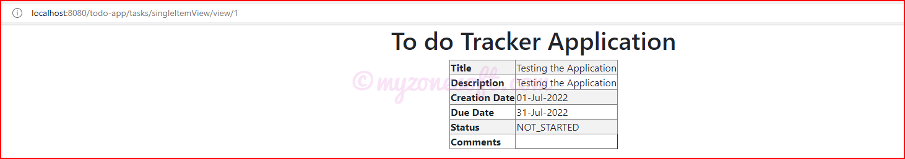
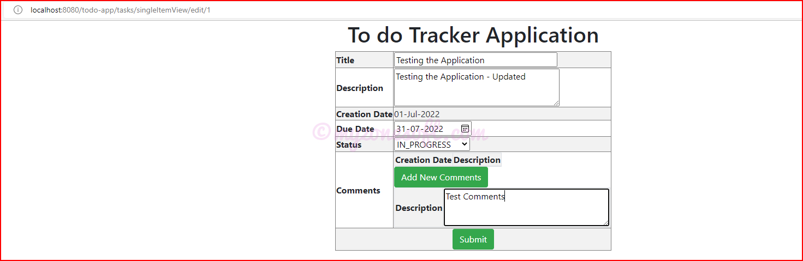

I will be using the same Relational Database known as H2 Database, for persisting(storing) the data, used in the above mentioned project.
Java Server Pages (JSP) will be the User Interface (UI) for this application.
If you have no time to read this article, but want to try the code for yourself, GitHub location is provided here. Go ahead and clone the code.
Overview
We will build a MVC application using Spring Boot, H2 Database and Java Server Pages (JSP) for a Todo Task Application in that:
Each Todo Task has id, title, description, creation date, due date, status and comments.
User can Create New Task, Update Existing Task, View All Tasks as List, View a Task and Delete a Task.
What is Model-View-Controller (MVC) Architecture?
Model designs based on MVC Architecture follow the MVC Design Pattern and they separate the Application Logic from the User Interface (UI) when designing the software. As the name implies MVC Pattern has three layers, which are:
Model– Represents the Business Layer of the Application
View– Defines the Presentation Layer of the Application
Controller– Manages the Flow of the Application
MVC Architecture
In the Java Programming Context, the Model consists of simple Java Classes(POJO - Plain Old Java Object classes), the View displays the data, usually the UI layer and the Controller consists of Servlets or Business Logic.
The Model Layer
In the MVC Design Pattern, the Model is the Data Layer which defines the Business Logic of the System and also represents the State of the Application. The Model Objects retrieve and store the State of the Model in a Database. Through this Layer, we apply Rules to Data, which eventually represents the concepts our application manages.
The View Layer
This Layer of the MVC Design Pattern represents the Output of the Application or User Interface (UI). It displays the data fetched from the Model Layer by the Controller and presents the data to the user whenever asked for. It receives all the information it needs from the Controller and it does not need to interact with the Business Layer directly.
The Controller Layer
The Controller is like an Interface between Model and View. It receives the user requests from the View Layer and processes them, including the necessary validations. The requests are then sent to Model Layer for Data Processing. Once they are processed, the data is again sent back to the Controller and then displayed on the View Layer.
The MVC Architecture provides an altogether new level of modularity to your code which makes it a lot more readable and maintainable.
Prerequisites
There are some prerequisites that are required for creating the Microservice Spring Boot Application.
Familiarity with Technology and Frameworks
It is assumed that you have prior basic knowledge or familiarity with Java Technology, Java Server Pages (JSP), Spring, Spring Boot, Hibernate Frameworks, working with RDBMS databases and basic SQL commands, because I will not be covering the basics of these in this article.
If you are not familiar, then it is advised to get the basic knowledge of these before continuing.
JDK 1.8+
Download the latest version of the Java JDK (1.17 is the latest LTS version, at the time of writing this article) from here. Click on the downloaded .exe and complete the installation.
Since it is an Oracle Proprietary product you will need to sign-in/create Oracle Account, before downloading.
Integrated Development Environment (IDE) for Code Development
You can use any IDE of your choice. I will be using the IntelliJ IDEA Community Edition.
If you wish to use the IntelliJ IDEA Community Edition, download the latest version from here.
Click on the downloaded .exe and complete the installation.
Other related software
Webserver– Tomcat is embedded in the Spring Boot application and can be used as Webserver for running this project.
Project Management Tool (Maven)– Maven is embedded in the Spring Boot application and can be used for building and managing the Spring Boot project.
Adding JSP to Spring Boot Project
We will be updating the Microservice Application already created in Microservice Using Spring Boot, Hibernate and H2 Database. We will make the necessary changes to add Java Server Pages (JSP) , as a View Layer to this application.
Update pom.xml
We need to package the project as a war file, because by default pom.xml would package the project into jar and when using JSP files with Spring Boot, we cannot use jar for packaging the project because, JSP files are placed in WEB-INF folder which is available outside the resources folder and will not be packaged in the jar.
<packaging>war</packaging>
Add the following dependencies to the pom.xml for JSP to be processed.
These prefix and suffix will inform the Application Server to process the JSP files from respective location.
Create a new folder /src/main/webapp/WEB-INF/jsp/
Make sure to keep all the JSP files in this folder, in order for application server to process them.
Update the existing Controller = controller.TodoController
Remove all the RequestMappings(like @GetMapping, @PostMapping, @PutMapping, @DeleteMapping) from this class, since it is serving as only Intermediary Controller class.
Create a new Controller Class = controller.TodoViewController
This is the Controller Class that will be receiving the requests from JSP and hence it will have all the RequestMappings(like @GetMapping, @PostMapping, @PutMapping, @DeleteMapping).
When you click on Create Button
Todo Tracker Create Page
Enter the values and Click on the Submit Button in the Create Page
Todo Tracker Home Page After Create
Click on View Button to go to the below page

Todo Tracker View Page
On the Home page, click on the Edit Button to get the Edit Page, where you can update the existing contents or add new comment.

Todo Tracker Edit Page
On the Home page, click on Delete Button and delete the task.
Todo Tracker Home Page After Delete
Conclusion
With this setup, we have come to an end of this article and we have seen how we can developing a Model-View-Controller (MVC) Application using Spring Boot, H2 Database and Java Server Pages (JSP).
Complete code for this project can be found at GitHub here. Go ahead and clone it.
Instructions on how to clone and run the project are provided on the GitHub page.
About Prashanth Bhat
Prashanth Bhat has about 15+ years of Developing/Coding knowledge. He loves to work with Technology, learn new things and share his learnings with others. For comments/feedback you can reach here.